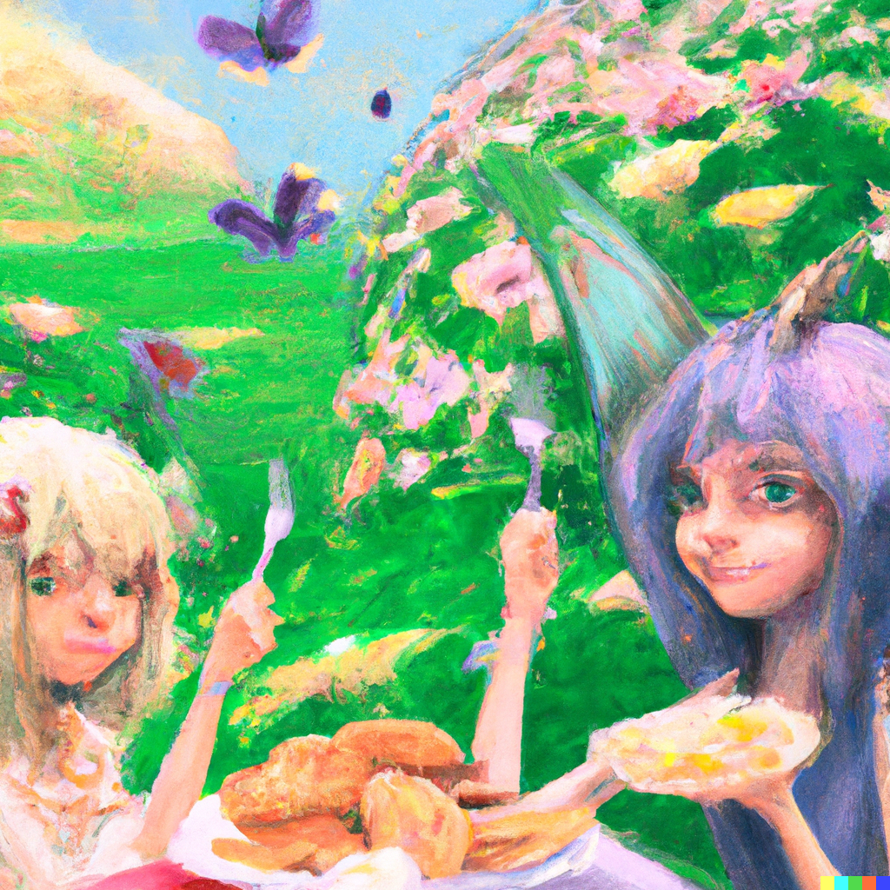

With her new two fairy friends, Mary was able to find her classes and share laughter about the differences between humans and fairies. "I swear we do not eat bugs or flowers, they are like our friends, the friendly ones of course." Gladiolus says while taking a bite out of her cut mango. "Fairies do not eat meat, I mean we have 'meat substitutes' since we are curious of the idea of what meat taste like," she adds, pointing at their sandwiches.
"Do you mind if I eat meat in front of you both?" Mary asks, she remembered that her mother packed her a ham and cheese sandwich for lunch and did not know if her new friends would like that.
"We don't mind at all," Freesia says, taking a bite out of her veggie sandwich, "But you have to be careful Mary, there are some fairies that do care. Thank you for asking us!"
"I forgot to ask you guys but are there races that do not get along? I know I am a witch but I do not know if there will be someone that is going to be rude to me.." Mary says, she remembers how humans always thought werewolves and vampires do not get along so there might be some truth to it.
Gladiolus shakes her head, "Everyone gets along, I am not sure what you learned with the humans but that is all wrong."
| Beginning | Next Day |